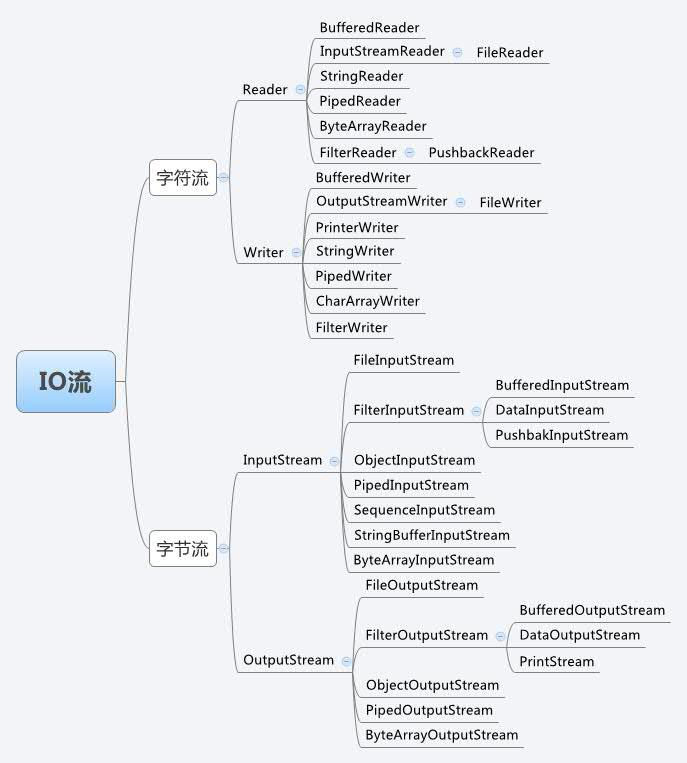
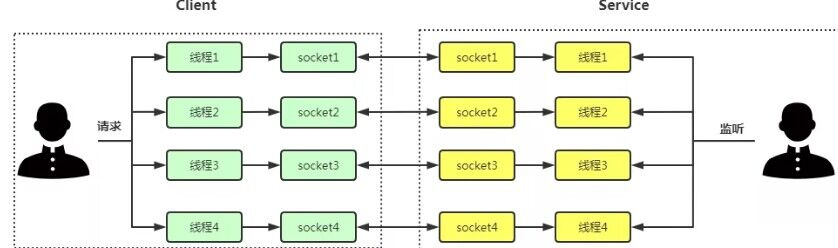
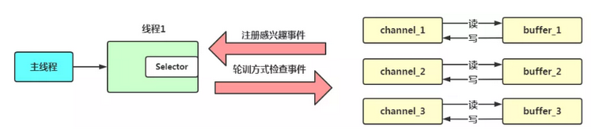
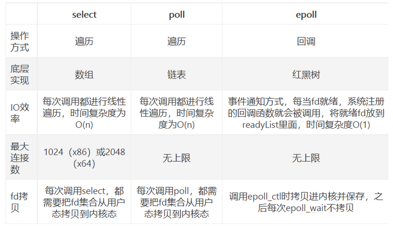

JavaIO详解
Java IO详解
基本概念：
同步与异步
- 同步：是应用程序要直接参与 IO 读写的操作。同步方式在处理 IO 事件的时候，必须阻塞在某个方法上面等待我们的 IO 事件完成(阻塞 IO 事件或者通过轮询 IO事件的方式)
- 异步：所有的 IO 读写交给操作系统去处理，应用程序只需要等待通知。所有的 IO 读写都交给了操作系统。这个时候，我们可以去做其他的事情，并不需要去完成真正的 IO 操作，当操作完成 IO 后，会给我们的应用程序一个通知。
阻塞与非阻塞：
- 阻塞：Java BIO 的各种流是阻塞的。这意味着，当一个线程调用 read() 或 write()时，该线程被阻塞，直到有一些数据被读取，或数据完全写入。该线程在此期间不能再干任何事情了。
- 非阻塞：Java NIO 的非阻塞模式，使一个线程从某通道发送请求读取数据，但是它仅能得到目前可用的数据，如果目前没有数据可用时，就什么都不会获取。而不是保持线程阻塞， 所以直至数据变的可以读取之前，该线程可以继续做其他的事情。 非阻塞写也是如此。一个线程请求写入一些数据到某通道，但不需要等待它完全写入，这个线程同时可以去做别的事情。 线程通常将非阻塞 IO 的空闲时间用于在其它通道上执行 IO 操作，所以一个单独的线程现在可以管理多个输入和输出通道（channel）
面向流与面向缓冲区
- 面向流:Java BIO 面向流意味着每次从流中读一个或多个字节，直至读取所有字节，它们没有被缓存在任何地方。此外，它不能前后移动流中的数据。如果需要前后移动从流中读取的数据，需要先将它缓存到一个缓冲区。
- Java NIO 的缓冲导向方法略有不同。数据读取到一个它稍后处理的缓冲区，需要时可在缓冲区中前后移动。这就增加了处理过程中的灵活性。但是，还需要检查是否该缓冲区中包含所有你需要处理的数据。而且，需确保当更多的数据读入缓冲区时，不要覆盖缓冲区里尚未处理的数据。
字节流与字符流
- 字节流：字节流在操作时本身不会用到缓冲区，是文件本身直接操作的。字节流以字节（8bit）为单位。
- 字符流：而字符流在操作时使用了缓冲区，通过缓冲区再操作文件。字符流以字符为单位。
字节流可以处理任何类型的数据，如图片、avi等，而字符流只能处理字符类型的数据

BIO
同步阻塞io：进程系统调用获取数据后，没有等到数据，则陷入阻塞状态。等到IO获取数据后，进程才就绪状态，经典模式为Acceptor模式：即每当一个client线程访问，服务器创建一个线程来回答。可以采用线程池进行优化。
每个客户端的Socket连接请求，服务端都会对应有个处理线程与之对应，对于没有分配到处理线程的连接就会被阻塞或者拒绝。相当于是一个连接一个线程。

特点：
- 使用一个独立的线程维护一个socket连接，随着连接数量的增多，对虚拟机造成一定压力。
- 使用流来读取数据，流是阻塞的，当没有可读／可写数据时，线程等待，会造成资源的浪费。
NIO
同步非阻塞多路复用io.：非阻塞的延伸，进程和IO进程不再是一对一而是一对多的关系，会一次性循环，不再创建线程去IO，而是需要是发出请求给acceptor，acceptor不断去轮询多个 socket 的状态，只有当 socket 真正有读写事件时，才真正调用实际的 IO 读写操作。因为在多路复用 IO 模型中，只需要使用一个线程就可以管理多个 socket，系统不需要建立新的进程或者线程，并且只有在真正有 socket 读写事件进行时，才会使用 IO 资源，所以它大大减少了资源占用率（select,poll,epoll）
(1)select==>时间复杂度O(n)
返回的是所有存放socket标志位fd_set的数据结构，实际上是一个long类型的数组。
它仅仅知道了，有I/O事件发生了，却并不知道是哪那几个流（可能有一个，多个，甚至全部），我们只能无差别轮询所有流
缺点：
- select只能监控1024个连接
- select 不是线程安全的，如果你把一个socket加入到select, 然后突然另外一个线程发现这个socket不用，要收回，这个select 不支持的。
- 每次调用select，都需要把fd_set集合从用户态拷贝到内核态，如果fd_set集合很大时，那这个开销也很大。
(2)poll==>时间复杂度O(n)
没有最大连接数的限制，原因是它是基于链表来存储的.
(3)epoll==>时间复杂度O(1)
返回的是具体某个handler标识
把原先的select/poll调用分成了3个部分：
- 调用epoll_create()建立一个epoll对象(在epoll文件系统中为这个句柄对象分配资源)
- 调用epoll_ctl向epoll对象中添加这100万个连接的套接字
- 调用epoll_wait收集发生的事件的连接
epoll支持的最大连接数是进程最大可打开的文件的数目
空闲的Socket调用回调函数，会把哪个流发生了怎样的I/O事件通知我们。所以我们说epoll实际上是事件驱动（每个事件关联上fd（文件描述符））的，此时我们对这些流的操作都是有意义的。（复杂度降低到了O(1)）

详细的多路复用底层原理
NIO 主要有:Channel(通道)，Buffer(缓冲区), Selector。
- selector：Selector 允许单线程处理多个Channel。如果你的应用打开了多个连接（通道），但每个连接的流量都很低，使用Selector就会很方便。要使用Selector，得向Selector注册Channel，然后调用他的select方法，这个方法会一直阻塞到某个注册的通道有事件就绪。一旦这个方法返回，线程就可以处理这些事件，事件的例子如有新连接接进来，数据接收等。
- Channel：基本上所有的IO在NIO中都从一个Channel开始。Channel有点像流，只不过 Stream 是单向的而 Channel 是双向 的，既可以用来进行读操作，又可以用来进行写操作。面向缓冲区。数据可以从channel读到buffer，也可以从buffer写到channel。
- Buffer：缓冲区本质上是一个可以读写数据的内存块，可以理解成是一个容器对象(含数组)，该对象提供了一组方法，可以更轻松的使用内存块，缓冲区对象内置了一些机制，能够跟踪和记录缓冲区的状态变换情况，Channel提供从文件，网络读取数据的渠道，但是读取或者写入的数据都必须经由Buffer。

每个线程中包含一个Selector对象，它相当于一个通道管理器，可以实现在一个线程中处理多个通道的目的，减少线程的创建数量。
远程连接对应一个channel，数据的读写通过buffer均在同一个channel中完成，并且数据的读写是非阻塞的。
通道创建后需要注册在selector中，同时需要为该通道注册感兴趣事件（客户端连接服务端事件、服务端接收客户端连接事件、读事件、写事件），selector线程需要采用轮训的方式调用selector的select函数，直到所有注册通道中有兴趣的事件发生，则返回，否则一直阻塞。
NIO使用举例
Java.io 包下需要掌握的流有16个:
文件专属
java.io.FileinputStream (用得最多)
java.io.FileOutputStream (用得最多)
java.io.FileReader
java.io.FileWriter
转换流:(将字节流转换成字符流)
java.io.InputStreamReader
java.io.outputStreamWriter
缓冲流专属:
java.io.BufferedReader
java.io.BufferedWriter
java.io.BufferedInputStream
java.io.BufferedOutputStream
数据流专属:
java.io.DataInpoutStream
java.io.DataOutputStream
标准输出流:
java.io.PrintWriter
java.io.PrintStream
对象专属流:
java.io.ObjectInputStream
java.io.ObjectOutputStream
1）使用NIO读取数据
在前面我们说过，任何时候读取数据，都不是直接从通道读取，而是从通道读取到缓冲区。所以使用NIO读取数据可以分为下面三个步骤：
FileInputStream fin = new FileInputStream(“c:\test.txt”);
从FileInputStream获取Channel ——FileChannel fc = fin.getChannel();
创建Buffer ——ByteBuffer buffer = ByteBuffer.allocate(1024);
文本将数据从Channel写入到Buffer中——fc.read(buffer);
用户从Buffer中直接读数据——byte b = buffer.get();
2）使用NIO写入数据
FileOutputStream fout = new FileOutputStream( “e:\test.txt” );
从FileOutputStream获取Channel——FileChannel fc = fout.getChannel();
创建Buffer—— ByteBuffer buffer = ByteBuffer.allocate( 1024 );
用户将数据直接写入Buffer——buffer.put( message[i] );
文本从Channel中读入Buffer数据—— fc.write( buffer );
综上所述，用户都是直接与Buffer接触。而文本才利用channel与Buffer接触
示例
NIO 非阻塞网络编程过程
- 当客户端连接时，会通过
ServerSocketChannel得到SocketChannel。 Selector进行监听select方法，返回有事件发生的通道的个数。- 将
socketChannel注册到Selector上，register(Selector sel, int ops)，一个Selector上可以注册多个SocketChannel。 - 注册后返回一个
SelectionKey，会和该Selector关联（集合）。 - 进一步得到各个
SelectionKey（有事件发生）。 - 在通过
SelectionKey反向获取SocketChannel，方法channel()。 - 可以通过得到的
channel，完成业务处理。
SelectionKey
SelectionKey，表示Selector和网络通道的注册关系，共四种：
int OP_ACCEPT：有新的网络连接可以accept，值为16int OP_CONNECT：代表连接已经建立，值为8int OP_READ：代表读操作，值为1int OP_WRITE：代表写操作，值为4
1 | public abstract class SelectionKey{ |
服务端建立连接之前监听的是一个Accept通道这个通道的作用就是监听是否有客户端要建立链接，实际建立连接了还会有一个客户端真正通信的通道。如果有其它客户端还想要建立链接，这个Accept监听端口监听到了，就会再创建几个真正的通信通道。也就是Server的一个端口可以建立多个TCP连接，因为IP层协议通过目标地址+端口+源地址+源端口四个信息识别一个上下文。
ServerSocketChannel
ServerSocketChannel 在服务器端监听新的客户端 Socket 连接，负责监听，不负责实际的读写操作
1 | public abstract class ServerSocketChannel extends AbstractSelectableChannel implements NetworkChannel{ |
SocketChannel
SocketChannel，网络 IO 通道，具体负责进行读写操作。NIO 把缓冲区的数据写入通道，或者把通道里的数据读到缓冲区。
1 | public abstract class SocketChannel extends AbstractSelectableChannel implements ByteChannel, ScatteringByteChannel, GatheringByteChannel,NetworkChannel{ |
举例
编写一个 NIO 群聊系统，实现服务器端和客户端之间的数据简单通讯（非阻塞）实现多人群聊。服务器端：可以监测用户上线，离线，并实现消息转发功能。客户端：通过 Channel 可以无阻塞发送消息给其它所有用户，同时可以接受其它用户发送的消息（有服务器转发得到
1 | //服务端 |
1 | //客户端 |
AIO
在异步非阻塞 IO 模型中，用户线程发起 read 操作，立刻就可以开始去做其它的事。然后，内核线程会等待数据准备完成，然后内核线程将数据拷贝到用户线程的缓冲区（磁盘等位置），当这一切都完成之后，内核会给用户线程发送一个信号，告诉它 read 操作完成
多路复用IO和AIO的区别：多路复用IO用户线程需要主动去读取数据，而AIO内核线程已经帮用户读区数据，用户直接使用